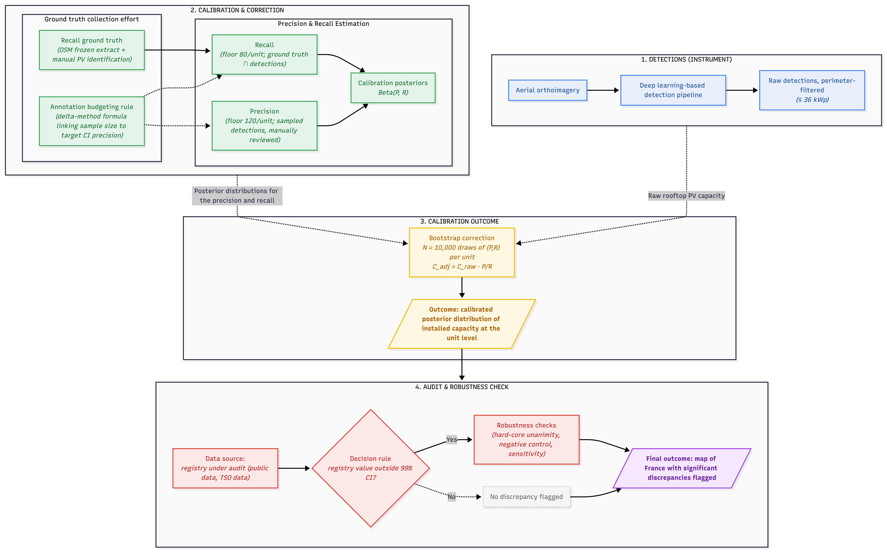
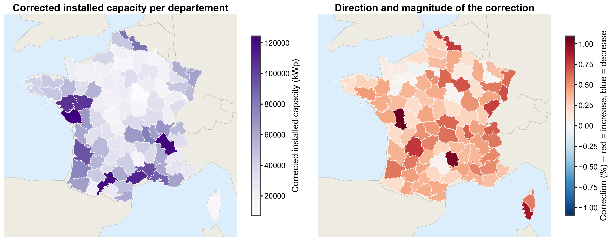
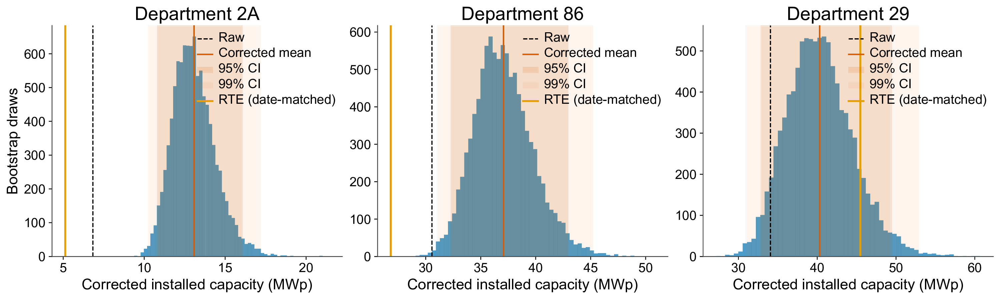
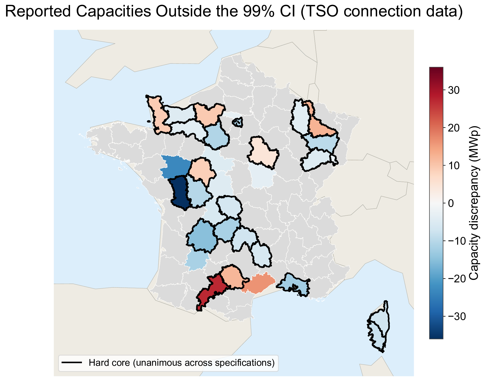
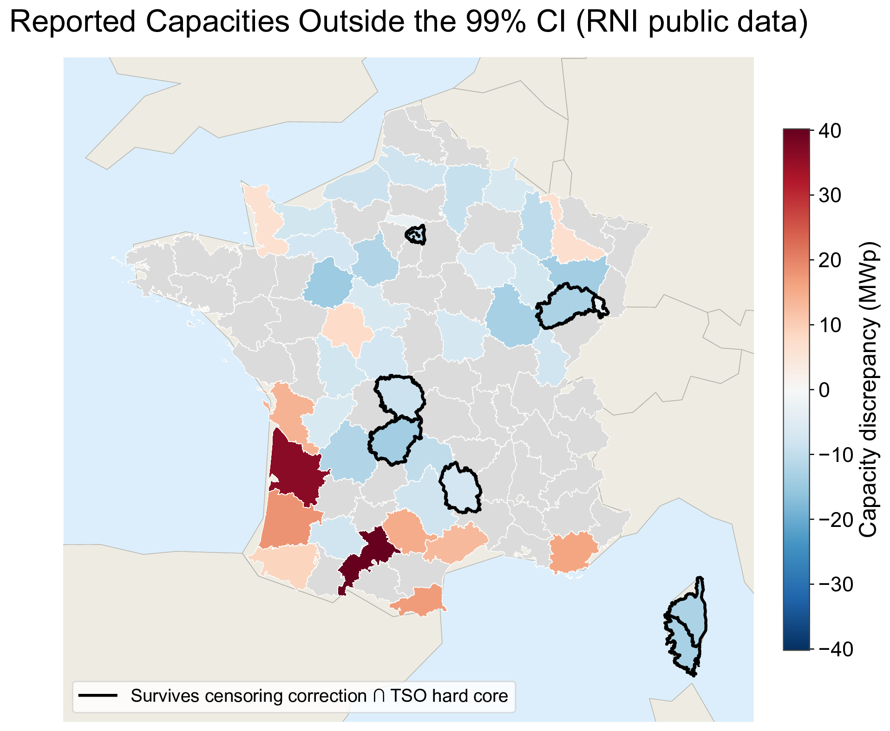
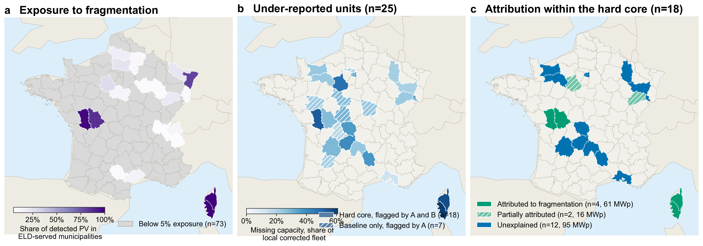

Preliminary results — under peer review. The figures and conclusions presented
on this page are drawn from a manuscript currently under review and may be revised before publication.
1.Motivation
Monitoring the deployment of rooftop PV at national scale requires a reliable census of
grid-connected installations. In France, the ground truth regarding connection data is the
TSO's RTE internal registry. Its public counterpart, the RNI (Registre national d'installations),
is derived from the internal registry.
But how complete and accurate are these sources, really? This study turns the usual validation logic on
its head: instead of using grid-connection data as ground truth to evaluate a remote-sensing method,
we show how to estimate a ground truth rooftop PV distribution based on an imperfect census —
namely the remote sensing-based detections of DeepPVMapper — to evaluate the accuracy of the
connection data regarding rooftop PV systems.
2.Estimation of ground truth PV capacity
2.1.Retrieving ground truth PV capacity from imperfect measurements
Rooftop PV detected on aerial imagery cannot be compared with a registry as it stands: a
detection product contains both false positives and misses (false negatives). The audit's
first step is therefore to turn these raw, biased detections into a corrected estimate of
installed capacity — one that can serve as an independent reference against which a
registry can be checked.
Ecological surveys have long faced the same problem: estimating a true, unknown population
size from noisy observations. We apply the same Bayesian logic to
reconstruct installed capacity from noisy detections. What we know about the true capacity
before seeing any data — the prior — is combined with what the data show —
the likelihood — into a posterior distribution that reflects both. Here, the prior is
the detector's own error, measured département by département: how many detections are
false positives (which sets its precision), and how many real installations
it misses (its recall). Precision is estimated by manually reviewing a
sample of the pipeline's own detections; recall, by checking whether installations
identified independently of the model — via OpenStreetMap and manual annotation of
aerial imagery — appear among the detections. Combining the two re-weights each
département's detected capacity by its measured precision and recall:
Cadj = (P / R) × Craw
where C denotes rooftop PV installed capacity, and P, R are the precision and recall
estimated from the pipeline's own raw detections. Because precision and recall are
themselves estimated from a finite annotation sample, each carries its own uncertainty
— modelled as a Beta distribution given the counts of true positives, false positives
and false negatives observed in that sample. Propagating this uncertainty through the
correction is done by simulation: at each of 10,000 draws, a precision and recall value are
sampled from their posteriors and applied to the raw detected capacity, which turns a single
point estimate into a full posterior distribution over the département's
true installed capacity — and therefore a mean value and a 99% credible interval,
rather than a single number.
This correction is only interpretable as the true rooftop PV capacity under four
estimation assumptions:
Homogeneity (H1). Detection status is independent of installation
capacity: true positives, false positives and false negatives have the same mean capacity.
Exhaustive geographic coverage (H2). The detector is run over the
entire reporting unit; no sub-region is excluded.
Representative sampling (H3). The samples used to estimate precision
and recall are drawn representatively from, respectively, the full set of raw detections and
the true population of installations.
Unbiased capacity conversion (H4). For a correctly detected
installation, its estimated capacity — converted from the detected roof surface via a
fixed area-to-capacity coefficient — is unbiased for its true capacity.
Under these four assumptions, it can be showed that the correction converges to the true capacity as the
annotation samples grow: more labels buy a tighter, more trustworthy estimate. This is what
lets the audit's decision rule — described below — distinguish a genuine registry
gap from mere noise in the correction itself.

Audit methodology flowchart.
2.2.Application for the French case
DeepPVMapper initially identified 589,623 raw detections,
totalling 2.90 GWp within the ≤36 kWp perimeter. The Bayesian protocol corrects
this into a national estimate of 4.03 GWp [3.96–4.11 GWp, 99% credible interval]
and 822,981 installations.
We collected a total of 31,870 points to estimate the precision and
recall of the detections and to correct the capacity estimates, with an average of 343 samples
per departement. Nationally, the measured pipeline precision was 0.81 (compared to 0.82 on the test set)
and the pipeline recall was 0.62 (compared to 0.96 on the test set).
In practice, the correction amounted to increase the estimated count and PV capacity in almost all departements.
This is due to the fact that the precision generally exceeds the recall of the pipeline.

Final installed capacity (left) and direction and magnitude of the correction (right)
3.Applying the correction to France
The reference against which this corrected estimate is checked is the TSO's own grid-connection
data, independently de-duplicated and date-matched to the day: once aligned, it stands at
3.90 GWp. The administrative reporting chain and the calibrated detection pipeline
— sharing no input data — converge on the same national figure, agreeing to within
3.3%. This is a full-scale sanity check on the method itself, and the protocol
passes it: it demonstrates that a noisy image-based detector can indeed be turned into a calibrated,
uncertainty-aware measurement instrument for a quantity as hard to observe as distributed rooftop PV.

Corrected capacity posteriors for two incomplete départements (Corse-du-Sud, Vienne) and one well-calibrated département (Finistère), with the TSO registry value overlaid.
This national convergence, however, is only half the picture — and, on its own, it conceals
more than it reveals. Averaging over 93 départements can make offsetting local errors disappear
into a reassuring national total. Section 4 turns to the local scale, where the two data sources
diverge sharply.
4.Comparison with RTE and RNI
4.1The TSO's connection data: national convergence, local blind spots
At the local scale, the agreement dissolves. 25 geographical units show capacity absent
from the TSO's connection data at the 99% credible level, totalling 228.2 MWp
(5.7% of the national corrected capacity). Conversely, 8 geographical units display
over-capacity in the grid connection data, totalling 99.4 MWp (2.5%). The signal is directional as
well as numerical: under-reporting units carry more than twice the capacity of over-reporting ones,
and missing capacity dominates the local picture.
This baseline rests on the assumption that detection performance does not depend on installation
size; the finding survives independently of it — even under the most conservative pairing of
methodological choices, a hard core of 18 geographical units and 172 MWp still
remains flagged as missing PV capacity, a lower bound on what the audit identifies. A separate,
7-unit hard core of over-reported units survives the same test, acting as a negative
control: it rules out the possibility that the flags are an artefact of the correction procedure
rather than a real property of the registry. The gaps are not marginal — in the
worst-affected unit, Corse-du-Sud, registry coverage falls to 39% of the estimated
fleet (equivalently, it misses 61%).

Under- and over-reported départements against the TSO connection data (day-level alignment). Outlined units form the hard core, robust across the specification battery.

The same audit against the public registry (RNI), before and after correcting for its municipal-level truncation bias.
4.2The public registry (RNI): a truncation bias on top of the same gaps
The public registry inherits the TSO's own gaps, since it is built from the same underlying data
— but a second, unrelated mechanism sits on top of them. For privacy reasons, French law
requires that municipalities with fewer than ten registered PV systems not be individually disclosed
in the RNI; their capacity is folded into a departmental aggregate instead of appearing at the
municipal level. This affects 14,019 municipalities, hiding more than
40% of capacity in over 10% of French départements — mostly concentrated in
rural areas. This truncation does not remove capacity from the departmental total, but it does
remove something the public data cannot recover: the fine-grained detail needed to study rooftop
PV's territorial dynamics.
Audited at face value, the RNI therefore looks far less complete than the TSO registry: 32
geographical units are flagged, purely because the privacy rule drops thousands of
municipalities with detected PV from the fine-grained view. Correcting for this censoring —
reintegrating the hidden capacity at the departmental level — collapses the count to
8 geographical units, all falling within the TSO registry's own hard core. In other
words, once the presentational artefact is removed, the public registry's local gaps are exactly
the ones already identified in the internal connection data — no more, no less.
4.3Mechanisms: the effect of local distributors (ELD)
Despite a centralised power system, France counts about 130 distribution system
operators: Enedis, the historical incumbent, serves over 90% of municipalities and about
95% of end users, while the remaining municipalities are served by local distribution companies
(Entreprises locales de distribution, ELDs), which report to the registry through their
own channels. Because this reporting interface can be identified directly in the data, whether
crossing it degrades registry completeness can be tested directly — rather than left as
speculation.
Comparing municipalities of the same département, ELD-served municipalities show
42% lower registry coverage than municipalities served by the incumbent, Enedis
(38% once municipality size is controlled for). The effect is directionally consistent across every
further test: it holds at detection floors of 20, 50 and 100 kWp, and non-parametrically — a
Wilcoxon signed-rank test across paired départements finds the coverage gap negative in
16 of 19 départements with sufficient sample (p = 0.0003). Detected
capacity itself does not differ between the two groups within a département, which rules out a
detection artefact: the gap sits in what gets reported, not in what is actually on the
roofs.

Exposure to fragmentation and attribution of missing PV capacity.Left: share of detected PV capacity exposed to local distribution companies (ELDs) rather than Enedis, by department.
Centre: departments with under-reported PV capacity, distinguishing those robustly flagged across specifications from baseline-only cases.
Right: attribution of the missing capacity within the robust set to fragmentation: fully explained, partially explained, or unexplained.
This finding lets the audit's most conservative signal of missing capacity be decomposed by cause.
A subset of 172 MWp of missing capacity has been isolated. Within this subset,
fragmentation accounts for 45% of the missing capacity — 77 of the 172 MWp.
The remaining 95 MWp, spread over 12 départements, resists every mechanism tested here: not fragmentation,
not a connection-date lag in either direction, nor any other observable factor. Non-declaration and
residual registry defects remain open hypotheses — ones for the registry operator to pursue,
since the audit has exhausted what can be established from the measurement side alone.
5.Perspectives
We propose a general framework to estimate the true installed capacity of distributed PV from imperfect
measurements. Rather than treating remote-sensing detections or administrative registries as ground truth,
the method combines imperfect detection with a bounded amount of independent validation to recover a
calibrated estimate of the underlying PV fleet, together with its uncertainty. This distinction matters:
reliable capacity estimates are essential for assessing deployment, planning electricity systems, and
evaluating the completeness of existing registries, yet administrative connection data can be incomplete
or systematically biased.
The approach is designed for reuse across countries and reporting systems. A reporting unit only requires
a raw detected total and a validation sample, while the annotation effort can be budgeted in advance for
a target precision. To maximize reproducibility and reapplicability, we release the estimator as the
standalone Python package bayesian-pv-census, allowing the same statistical procedure to be
applied to new imagery, countries, and administrative datasets without reimplementing the method.
This broader use case is particularly important as rooftop solar expands faster than administrative systems
can track it. Where a reliable registry exists, the framework provides an independent audit; where it does
not, it can turn imperfect remote-sensing observations into the first statistically calibrated estimate of
a PV fleet that has not been reliably counted. In particular in countries such as Pakistan, this framework
could be used to estimate a PV capacity from the detections of projects such
as EarthPV.